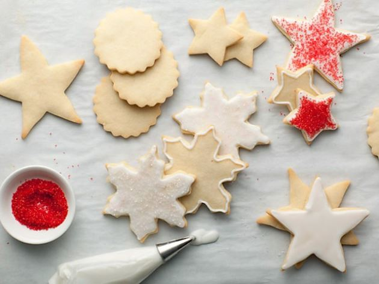

Sugar Cookie Recipe
Ingredients
3 cups all-purpose flour
3/4 teaspoon baking powder
1/4 teaspoon salt
1 cup unsalted butter, softened
1 cup sugar
1 egg, beaten
1 tablespoon milk
Powdered sugar, for rolling out dough
Directions
- Sift together flour, baking powder, and salt. Set adise.
- Place butter and sugar mixer and beat until light in color.
- Add egg and milk and beat to combine. Put mixer on low speed, gradually add flour, and beat until mixture pulls away from the side of the bowl.
- Divide the dough in half, wrap in waxed paper, and refrigerate for 2 hours.
- Preheat oven to 375 degrees Fo.
- Sprinkle surface where you will roll out dough with powdered sugar. Remove 1 wrapped pack of dough from the refrigerator at a time
- Springkle rolling pin with powdered sugar, and roll out dough to 1/4inch thick. Move the dough around and check underneath frequently to make sure it is not sticking.
- Cut into desired shape, place at least 1-inch apart on a greased baking sheet or parchment.
- Bake for 7 to 9 minutes or until cookies are just beginning to turn brown around the edges.
- Let sit on baking sheet for 2 minutes after removal from oven and then move to complete cooling on wire rack.
Link to Original Recipe
Contact Me
Contact me through e-mail!
The University of Montana
32 Campus Drive
Missoula, MT 59812
